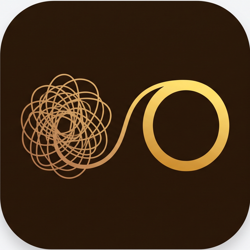

Last updated: August 13, 2026
Progrex ("the app", "we", "us") is a task and reminder app. This page explains what information the app touches, where it is stored, who else can see it, and the choices you have.
Everything you put into Progrex is stored on your phone, in the app's private local storage. This includes:
None of the above is transmitted to us or to anyone else. The only exception is the title of a task you personally choose to hand to a peer — see the next section.
Progrex lets you pair with another Progrex user and hand them a specific task, so that only they can mark it done. This feature is entirely optional. Everything in this section applies only if you choose to use it.
When you use it, the following is stored on Google Firebase (Firestore, Authentication and Cloud Messaging), operated by Google:
| What | Why |
|---|---|
| An account identifier for you | So the app knows which tasks and peers are yours. By default this is an anonymous, randomly generated ID that contains no personal information. |
| Your invite code and the display name you choose | So somebody can add you as a peer, and so they can recognise you. The display name is whatever you type; it does not have to be your real name. |
| Who you are paired with, and whether a request is pending, accepted or declined | To maintain the peer relationship. |
| The title of any task you hand to a peer, plus its status and timestamps | Your peer cannot judge whether something is finished without knowing what it is. |
| Encouragement messages sent between you and your peer | To deliver them. Both of you can read the thread on that task. |
| A notification token for your device | So we can notify you when your peer acts on a task or sends you a message. |
What is deliberately not sent, even for a peer task: the task's notes, due date, reminders, time estimates, how long you actually worked, your postpone reasons, and your "why this matters" answer. Your peer sees the title and whether it is done — nothing else about the task, and nothing at all about your other tasks.
You can use Progrex without any account. If you use peer accountability, the app signs you in anonymously — a random identifier with no personal details attached.
You may optionally create a real account so your peers and purchases survive reinstalling the app or changing phone:
Creating an account upgrades your existing anonymous identity rather than replacing it, so your invite code and existing peers carry over.
If you turn on calendar sync in Settings, Progrex writes an event to a calendar on your device (via Android's standard Calendar provider) for each task with a due date, and keeps that event updated as you edit or complete the task. This is opt-in, off by default, and entirely local to your device — Progrex only writes to your device's own calendar storage, the same as any other calendar app, and does not read your existing events. Turning sync off leaves any already-created events in place; you can delete them yourself.
Progrex schedules local reminder notifications for your tasks, based on the reminder lead time you choose per task. These are scheduled and delivered entirely on your device, and no reminder data is sent anywhere.
Separately, if you use peer accountability, we send push notifications through Google Firebase Cloud Messaging when your peer acts on one of your tasks or sends you a message. These are only sent to the two people involved in that task.
Progrex includes a manual backup/export feature that saves a copy of your data, for example to move it to a new device. This export is created and shared at your own initiative, through your device's own file and share picker — we never receive a copy, and nothing is uploaded automatically. Exporting your own data is free and always will be.
Progrex includes optional paid features. Any purchase is processed by Google Play; we never see or store your payment details, card number or billing address. Google tells the app only whether a purchase is active. Your core tasks, the focus timer and exporting your data are not behind any payment.
Progrex contains no advertising, no advertising identifiers, and no third-party analytics or tracking SDKs. Google Analytics is switched off for this project. We do not build profiles about you, and we do not sell or share your information with anyone for marketing.
We do not sell your information, and we do not share it with anyone else except where we are legally required to.
Data on your device stays until you delete it or uninstall the app. Peer data stored on Firebase stays until you delete your account, or until you or your peer delete the relevant task or link.
Uninstalling Progrex removes all local data completely. Within the app you can delete individual tasks, and clear completed-task history from the Completed tab, at any time.
Go to Settings → Account → Delete account. This permanently removes:
One thing this cannot remove, and you should know it: if you sent an encouragement message on a task belonging to someone else, that message stays in their copy of that thread, in the same way an email you sent stays in the recipient's inbox. Your anonymous identifier may also remain listed as the peer on tasks other people created. If you want those removed, ask that person to delete the task, or contact us at the address below.
Depending on where you live, you may have rights to access, correct, export or delete your personal information, and to object to or restrict its processing. Progrex is built so you can exercise most of these yourself and immediately: your data is on your device, the export feature gives you a portable copy for free, and account deletion is available in the app without needing to ask us. For anything else, contact us using the address below.
Progrex is not directed at children under 13, and we do not knowingly collect personal information from children. If you believe a child has provided us with personal information, contact us and we will delete it.
Peer data is stored on Google Cloud infrastructure in the United States. If you are located elsewhere, including in the European Economic Area or the United Kingdom, your information may be transferred to and processed in the United States under the safeguards Google applies as our processor.
If this policy changes, we will update the "Last updated" date above. Material changes that affect what leaves your device will be described in the app as well.
Questions about this policy or your data? Email MLE.Studio@hotmail.com.